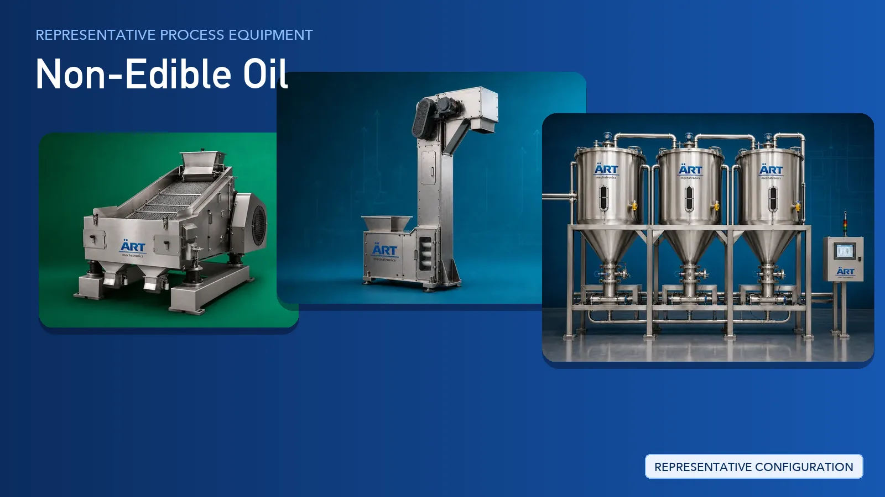

Non-Edible Oil Plant & Machinery Solutions (Castor, Neem & Industrial Oil Seeds)
Non-edible oils are pressed from oil seeds such as castor, neem and other industrial varieties, and are supplied to lubricant, soap, detergent, agro-input, biodiesel feedstock and speciality chemical buyers.

About Non-Edible Oil processing
ART Mechatronics provides complete turnkey solutions for non-edible oil processing plants, offering systems for seed intake and storage, cleaning, dehusking, conditioning, expelling, oil clarification, storage and filling. Our solutions are designed for continuous seed flow, robust industrial duty and automated operation for domestic and export markets.
Complete Non-Edible Oil Process Flow
Seeds such as castor, neem and other non-edible oil seeds are received, weighed and stored ahead of processing.
Provides controlled, continuous feed into the plant.
Dust, chaff, stones, mud balls and tramp metal are removed from the seed stream.
Protects downstream machinery and improves oil quality.
Husk and shell are separated from the kernel and the cleaned seed is graded before pressing.
Separates husk from kernel and removes light waste.
Prepared seed is conditioned and flaked or crushed so the material presses evenly.
Prepares uniform feed for the expeller.
Conditioned seed is mechanically pressed to separate crude oil from the solid cake.
Produces:
- Crude non-edible oil
- De-oiled cake for onward handling
Crude oil is clarified to remove fines and sediment, then held in dedicated tanks before dispatch.
Keeps oil free of suspended solids ahead of filling.
Clarified oil is filled into jerry cans, drums or bulk containers, while the cake is conveyed, bagged and stacked.
Supports retail, industrial and bulk dispatch formats.
Machinery Required for Non-Edible Oil Plant
Turnkey Non-Edible Oil Plant Solutions
ART Mechatronics offers complete turnkey solutions for non-edible oil processing plants, including:
- Process design & plant layout
- Seed intake, storage and conveying systems
- Cleaning, dehusking and grading systems
- Conditioning and flaking systems
- Expelling and cake handling systems
- Oil clarification and storage systems
- Automation & control panels
- Filling and packing line integration
- Installation & commissioning
- After-sales support
We customize solutions based on:
- Seed type (castor, neem and other non-edible seeds)
- Production capacity
- Cleaning and dehusking requirements
- Oil storage requirements
- Filling format (jerry can, drum, bulk)
Why Choose ART Mechatronics for Non-Edible Oil
- Expertise in oil seed handling and preparation systems
- Integrated cleaning, dehusking and conditioning lines
- Robust industrial-duty machinery construction
- Dust control engineered into the seed handling line
- Automated, continuous plant operation
- Global export capability
Machinery in a Non-Edible Oil plant
Where it's used
Get pricing & specs for the Non-Edible Oil plant
Share the product, target capacity, current process and plant location. These details help our engineers discuss the right machine or line configuration.
One partner, from design to start-up
ART Mechatronics designs, manufactures, installs and commissions your Non-Edible Oil plant solution with regional presence in India, UAE and Thailand.